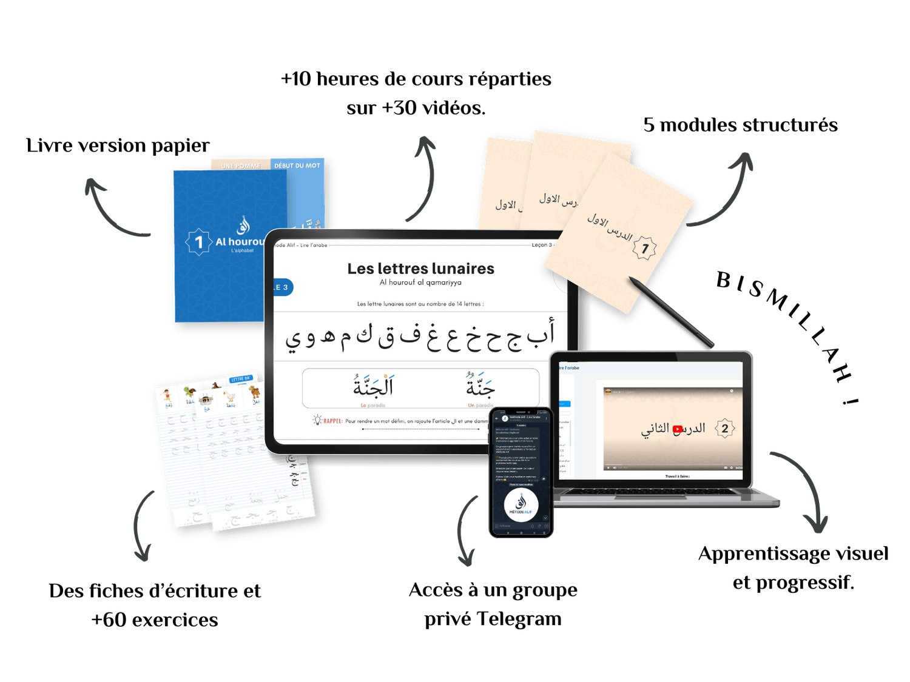
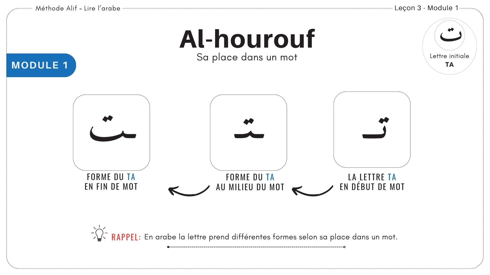
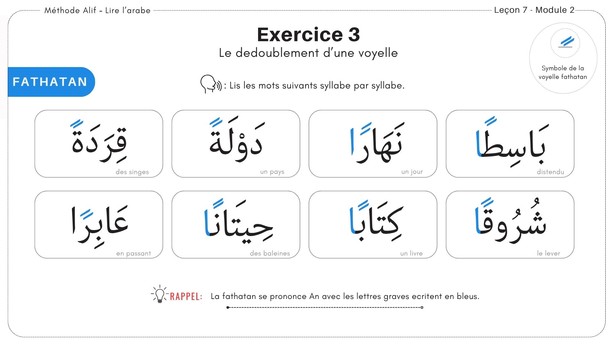
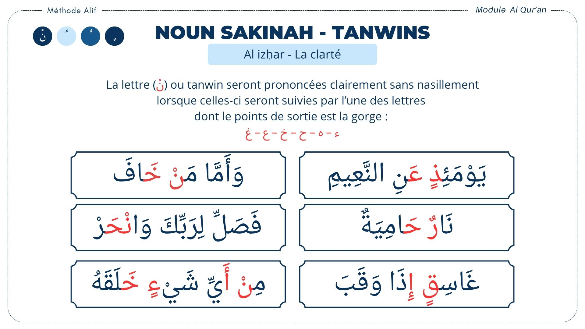
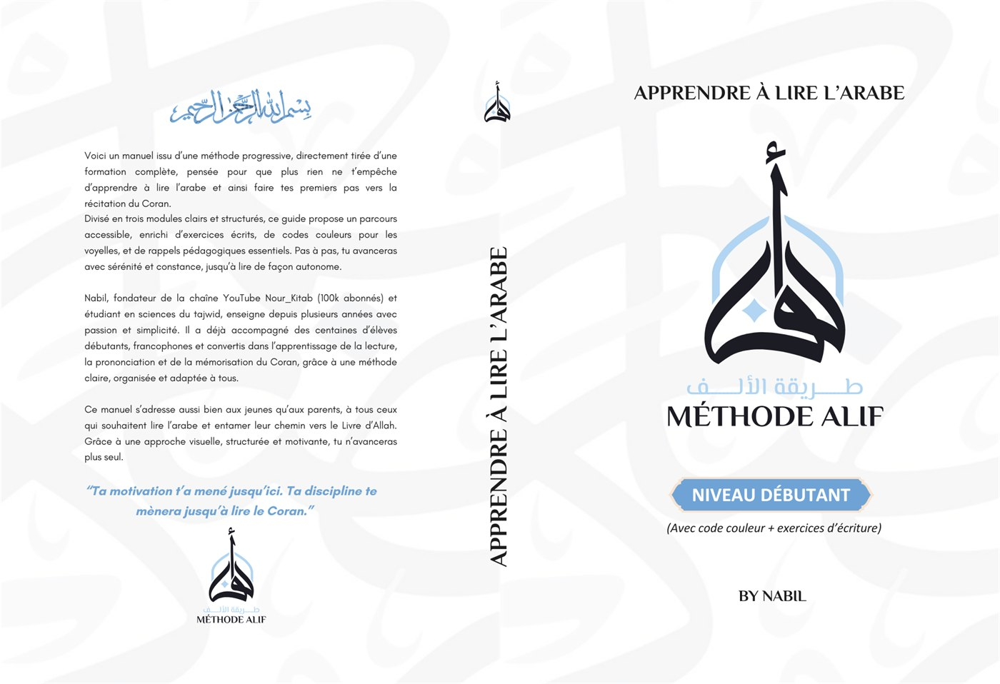
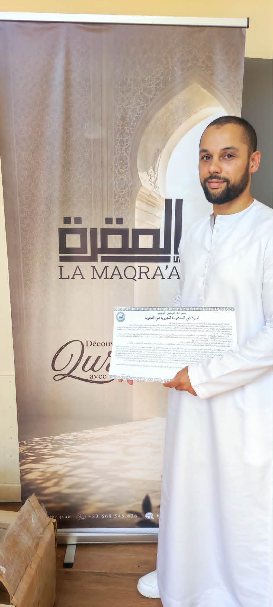

La phonétique t'enferme
Tu lis le Coran en lettres latines. La prononciation reste approximative et la vraie lecture ne vient jamais.
La Méthode Alif t'apprend à lire l'arabe sans phonétique : les 28 lettres, les voyelles, puis tes premiers versets avec le tajwid. Vingt-cinq minutes par jour suffisent.

hero.jpg · 1600×900
Une application téléchargée, des vidéos éparpillées, un cahier acheté puis refermé.
L'envie est là depuis longtemps. Ce sont les résultats qui ne suivent pas.
Tu lis le Coran en lettres latines. La prononciation reste approximative et la vraie lecture ne vient jamais.
ب ت ث, puis ج ح خ. Sans méthode de reconnaissance, la confusion revient à chaque page.
Une vidéo par-ci, une appli par-là. Rien ne s'enchaîne, donc rien ne se fixe vraiment.
Peur de mal prononcer, peur de transmettre une erreur à tes enfants. Alors tu attends le bon moment.
Le problème n'a jamais été ta capacité.
C'est l'ordre dans lequel on t'a appris.
Pas besoin d'y passer des heures. Chaque étape a ses vidéos, ses exercices et ses fiches, dans un ordre pensé pour donner des résultats dès les premiers jours.
Niveau grand débutant, aucun prérequis. Chaque lettre est décomposée : sa forme, son point d'articulation, son son.

etape-1.jpg · 1200×900Les voyelles, les tanwin, le soukoun et la chedda. L'écriture ancre la lecture : tu traces, tu relis, tu retiens.

etape-2.jpg · 1200×900On passe au niveau supérieur. Tu appliques les règles qui embellissent la récitation et tu donnes à chaque lettre son droit.

etape-3.jpg · 1200×900Rien d'inutile, rien qui manque. Chaque module est conçu pour donner un résultat concret.
Pas une promesse vague. Voici très concrètement ce que tu seras capable de lire à chaque étape, si tu y consacres tes vingt-cinq minutes par jour.
Les 28 lettres, isolées, avec leur son et leur point d'articulation. Tu ne confonds plus ب, ت et ث.
Les lettres attachées, les voyelles courtes et longues. Tu déchiffres un mot entier sans phonétique.
Tanwin, soukoun, chedda, lettres solaires et lunaires. Tu lis une sourate courte du début à la fin.
Tu ouvres le Coran à n'importe quelle page et tu lis, en donnant à chaque lettre son droit.
Le but n'est pas que tu restes élève. C'est qu'au bout de 60 jours tu ouvres le Coran seul, sans phonétique et sans aide, et que tu puisses à ton tour apprendre l'alphabet à tes enfants. La fluidité viendra ensuite, avec la pratique. La lecture juste, elle, sera déjà acquise.
Tu sais exactement ce qui se passe une fois que tu as payé. Aucune zone d'ombre.
Un courriel arrive dans les minutes qui suivent avec tes identifiants. Tu ouvres la première vidéo le soir même.
Tu poses ta première question. Je réponds, et tu vois que d'autres débutent en même temps que toi.
Une leçon de vingt-cinq minutes, un exercice, et tu traces déjà l'alif, le ba, le ta et le tha.
Chaque lettre, avec son son. Et ton livre papier, expédié sous 10 jours, arrive bientôt pour réviser loin de l'écran.

livre-1.jpgPlus de 200 pages illustrées avec un code couleur intuitif pour repérer chaque règle d'un coup d'œil. Tu apprends devant l'écran, tu révises loin de l'écran.
nabil.jpg
nabil-2.jpg

ijaza.jpg
J'aide les musulmans francophones à passer de l'envie d'apprendre à une vraie progression. Depuis cinq ans, j'enseigne à des débutants complets et je vois revenir toujours les mêmes blocages.
La Méthode Alif est née de là : remettre les étapes dans le bon ordre, retirer tout ce qui ralentit, et t'amener à lire le Coran avec clarté et confiance.
Débutants ou avec de petites bases, ils ont tous obtenu des résultats concrets.
4,5 sur 5 Avis vérifiés sur Trustpilot« Le premier verset que j'avais lu, c'était une telle fierté. »
Dépose l'audio de Nora ici : nora.mp3.
« Je n'avais aucune base et, grâce à votre méthode, j'ai appris l'alphabet. »
Dépose l'audio de Karima ici : karima.mp3.
Vraiment une très bonne formation, je la recommande vivement. Elle m'a permis de savoir lire le Coran en arabe. Merci à notre frère Nabil, sa méthode est très efficace.
Très bonne pédagogie, cours bien structuré avec des exercices oraux et écrits, des évaluations en fin de cours. On travaille à son rythme et on ressort enrichi à chaque leçon. J'ai commencé à lire le Coran. Al hamdoulillah.
Formation top. Étant débutant, elle m'a vraiment permis d'apprendre beaucoup sur la lecture et l'écriture du Saint Coran. Le formateur maîtrise son sujet et les explications sont claires. Barak Allah oufik.
El hamdoulillah, cette méthode est structurée et facile pour mémoriser les lettres de l'alphabet rapidement. Les exercices et les explications aident énormément à progresser vite. Je recommande sans hésitation.
Formation parfaite. Rien à dire : très bien expliquée, très bonne méthode pour comprendre et apprendre rapidement. Après seulement 10 jours, je peux lire mes premières pages.
J'avais beaucoup d'a priori sur ma capacité à lire et parler l'arabe. Grâce à cette méthode, beaucoup de notions ont été traitées et je m'imagine devenir bilingue un jour. Je recommande les yeux fermés.
Je remercie Dieu, ainsi que mon cher frère Nabil, pour cette initiative. Des cours très compréhensibles, accessibles, simplifiés, avec des exemples à l'appui.
Efficace, la méthode fonctionne. Masha'Allah, elle m'a permis d'apprendre à lire et à comprendre les premières règles de la bonne prononciation. La pédagogie permet de comprendre facilement et assez rapidement.
Je l'ai achetée pour moi et mes enfants de 10 et 12 ans. Les vidéos et les fiches sont très pédagogiques. C'est un gros soulagement. En plus, le prix est top sachant que toute ma famille en profite. Je recommande à 100 %.
La Méthode Alif t'apprend à lire l'arabe, pas à le parler. C'est un objectif différent, et je préfère te le dire avant.
La régularité fait tout. Sans ces vingt-cinq minutes, aucune méthode ne fonctionnera, ni la mienne ni une autre.
La formation, ce sont des vidéos préenregistrées et un accompagnement écrit sur Telegram. Tu peux ajouter trois séances en visio, mais pas un cours particulier chaque semaine.
Pour tous les autres, débutants et francophones qui veulent enfin lire le Coran,
elle est faite exactement pour toi.
Toute la méthode, le livre papier et le groupe d'entraide.
Sans abonnement, sans reconduction, sans surprise.
« Après seulement 10 jours, je peux lire mes premières pages. »
Tout le programme, le livre papier et le groupe d'entraide, réunis au même endroit.
Satisfait ou remboursé, sans condition. Tu as 14 jours pour tester la formation entière. Un simple courriel suffit : tu es intégralement remboursé, et tu gardes le livre.
Expédié sous 10 jours, partout en Europe. La livraison est offerte, et il reste à toi quoi qu'il arrive.
Beaucoup d'élèves apprennent avec leurs enfants dès 10 ou 11 ans. Un seul achat suffit pour la maison.
Le groupe Telegram est ouvert 7j/7. Une question à 23 h ? Tu la poses, tu obtiens une réponse.
Aucune. La formation démarre à zéro, à la première lettre de l'alphabet. Si tu as déjà de petites bases, tu avanceras simplement plus vite sur les premiers modules.
Oui. Je propose un défi gratuit de 7 jours : une leçon par courriel chaque matin, vingt-cinq minutes par jour, plus un e-book offert dès l'inscription. Aucune carte bancaire n'est demandée et tu te désinscris en un clic. Tu vois exactement comment j'enseigne, puis tu décides.
Vingt-cinq minutes par jour suffisent. Les vidéos sont courtes et chaque leçon se termine par un exercice bref. La régularité compte bien plus que la durée : vingt-cinq minutes tous les jours battent deux heures le dimanche. Et si tu avances moins vite, aucun souci : Nora et Karima ont pris 90 jours, et ton accès est à vie.
Les cours sont des vidéos préenregistrées que tu suis librement, quand tu veux, autant de fois que nécessaire. Ton accès est illimité dans le temps, sans abonnement ni reconduction, et je réponds personnellement à tes questions dans le groupe Telegram, ouvert 7j/7. Si tu veux un suivi en direct, tu peux ajouter au moment du paiement trois séances de 40 minutes sur Zoom avec moi, une après chaque module, pour 48 €.
Oui, partout en Europe. Le livre part de France, la livraison est offerte et il est expédié sous 10 jours. En dehors de l'Europe je ne l'expédie pas pour le moment : écris-moi à contact@methode-alif.com avant de commander.
Oui. Un seul achat suffit pour le foyer. Beaucoup de parents suivent la formation en même temps que leurs enfants, à partir de dix ou onze ans, et c'est souvent ce qui les fait tenir sur la durée.
Oui. Lire l'arabe, ce n'est pas apprendre une langue : c'est reconnaître 28 lettres et quelques règles, dans le bon ordre. La méthode avance lettre par lettre, et chaque vidéo se revoit autant de fois que nécessaire. La plupart de mes élèves partaient de zéro, à tout âge.
Oui. Les vidéos se regardent sur téléphone, tablette ou ordinateur. Et le livre papier te permet de réviser sans écran, partout.
Tu paies 49,50 € aujourd'hui, puis 49,50 € un mois plus tard, automatiquement. Sans frais, et plus rien ensuite : ce n'est pas un abonnement.
Regarde d'abord dans tes spams et dans l'onglet Promotions. Si tu ne trouves rien au bout d'une heure, écris-moi à contact@methode-alif.com : je t'envoie tes accès.
Tu as quatorze jours pour demander un remboursement, sans aucune condition et sans justification à fournir. Il te suffit de m'écrire à contact@methode-alif.com : tu es remboursé intégralement, et tu gardes le livre papier. Le paiement lui-même est sécurisé à 100 %, par carte bancaire ou via PayPal, avec un cryptage SSL.
Sept jours pour apprendre les lettres arabes et lire tes premiers mots du Coran. Une leçon par courriel chaque matin, vingt-cinq minutes par jour, c'est tout. Tu vois exactement comment j'enseigne avant de dépenser le moindre euro.
C'est 100 % gratuit, livraison instantanée. Si la méthode te convient ensuite, la formation complète est à 99 €, avec 14 jours satisfait ou remboursé.
Arrête de déchiffrer et commence à lire vraiment. Délaisse la phonétique et passe à une prononciation correcte, lettre après lettre.
14 jours satisfait ou remboursé · 2 × 49,50 € sans frais · accès à vie